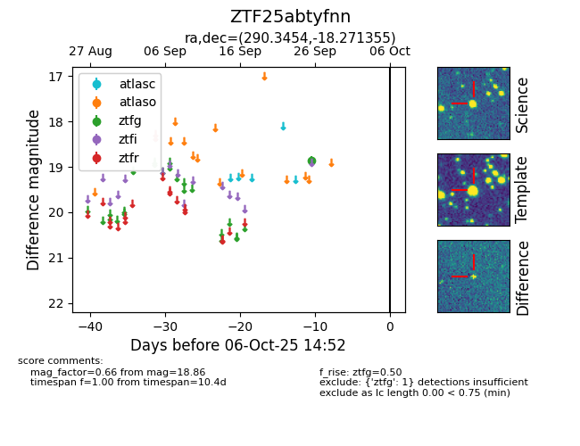

FINK: ZTF25abtyfnn
Lasair: ZTF25abtyfnn
ALeRCE: ZTF25abtyfnn
ZTF25abtyfnn (ztf,fink)
equatorial (ra, dec) = (290.3454,-18.27136)
galactic (l, b) = (19.6287,-14.65887)

last ztfg=18.86
1 ztfg detections